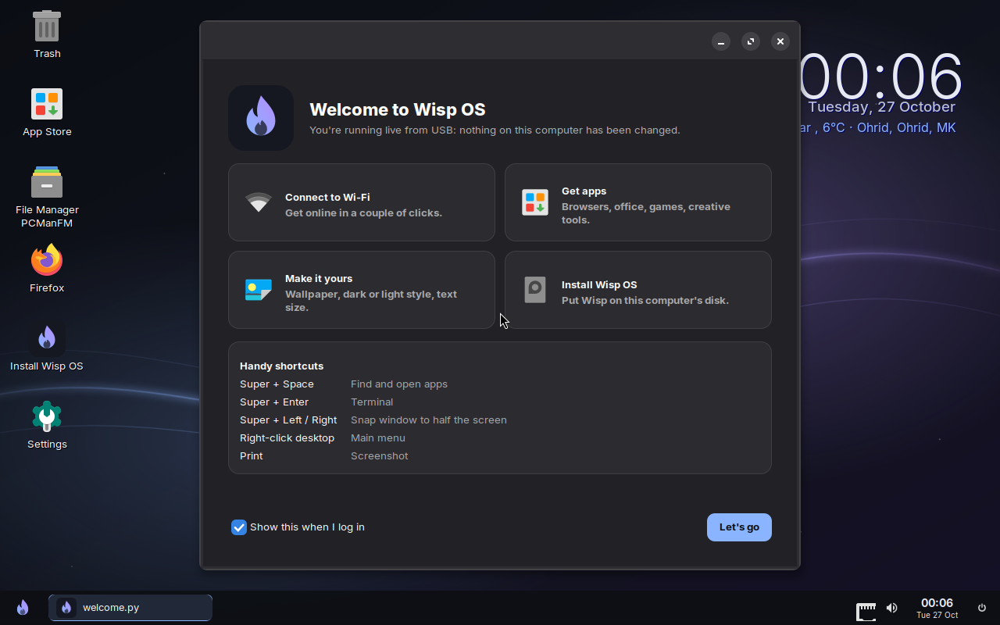

<meta charset="utf-8">
<meta name="viewport" content="width=device-width, initial-scale=1, viewport-fit=cover">
<title>Wisp OS</title>
<meta name="claude:viewport-fit-sides" content="cover">
<meta name="description" content="Wisp OS: a modern, good-looking Linux desktop that idles at 167 MB and runs on 1 GB PCs.">
<link rel="icon" href="img/wisp.svg">
<link rel="preconnect" href="https://fonts.googleapis.com">
<link rel="preconnect" href="https://fonts.gstatic.com" crossorigin>
<link rel="stylesheet" href="https://fonts.googleapis.com/css2?family=Bricolage+Grotesque:opsz,wght@12..96,400;12..96,600;12..96,800&family=Geist:wght@400;500;600&family=JetBrains+Mono:wght@400;600&display=swap">
<style>
/* Layout: a night sky with one glowing wisp trail running through it. Text sits left, the desktop floats below, sections step down the trail. Single dark look, on purpose: it is the OS's own world. */
:root {
  color-scheme: dark;
  --night: #0b0d13;
  --night-2: #10131d;
  --surface: #151821;
  --surface-2: #1b1f2b;
  --line: #262b3a;
  --ink: #e8ebf4;
  --ink-soft: #a3abc2;
  --ink-faint: #6d7591;
  --blue: #8ab4ff;
  --lavender: #b48cff;
  --ember: #ffb08a;
  --wisp: linear-gradient(100deg, #8ab4ff 0%, #b48cff 100%);
  --display: "Bricolage Grotesque", "Avenir Next", "Segoe UI", sans-serif;
  --body: "Geist", "Helvetica Neue", "Segoe UI", sans-serif;
  --mono: "JetBrains Mono", ui-monospace, "SF Mono", Menlo, monospace;
  --step--1: 0.85rem;
  --step-0: 1rem;
  --step-1: 1.2rem;
  --step-2: 1.6rem;
  --step-3: clamp(1.9rem, 4vw, 2.8rem);
  --step-4: clamp(2.6rem, 7vw, 5.4rem);
  --wrap: 1180px;
  --gutter-l: max(20px, env(safe-area-inset-left, 0px));
  --gutter-r: max(20px, env(safe-area-inset-right, 0px));
}
* { box-sizing: border-box; }
html { scroll-behavior: smooth; }
body {
  margin: 0;
  background: var(--night);
  color: var(--ink);
  font: 400 var(--step-0)/1.6 var(--body);
  -webkit-font-smoothing: antialiased;
  overflow-x: hidden;
}
body::before {
  content: ""; position: fixed; inset: 0 0 auto; height: env(safe-area-inset-top, 0px);
  z-index: 10; background: var(--night);
}
a { color: var(--blue); }
a:focus-visible, button:focus-visible { outline: 2px solid var(--blue); outline-offset: 3px; border-radius: 8px; }
h1, h2, h3 { font-family: var(--display); font-weight: 800; letter-spacing: -0.02em; line-height: 1.04; text-wrap: balance; margin: 0; }
p { margin: 0; }
.wrap { max-width: var(--wrap); margin: 0 auto; padding-left: var(--gutter-l); padding-right: var(--gutter-r); }
.eyebrow {
  font: 600 var(--step--1)/1 var(--mono); text-transform: uppercase; letter-spacing: 0.14em; color: var(--blue);
}
.glow-text { background: var(--wisp); -webkit-background-clip: text; background-clip: text; color: transparent; }
.lede { color: var(--ink-soft); font-size: var(--step-1); max-width: 58ch; }
section { padding-block: clamp(72px, 11vw, 140px); position: relative; }
.section-head { display: grid; gap: 18px; margin-bottom: clamp(36px, 5vw, 56px); max-width: 760px; }
.section-head h2 { font-size: var(--step-3); }

/* nav */
.nav {
  position: sticky; top: env(safe-area-inset-top, 0px); z-index: 20;
  background: color-mix(in srgb, var(--night) 78%, transparent);
  backdrop-filter: blur(14px); -webkit-backdrop-filter: blur(14px);
  border-bottom: 1px solid color-mix(in srgb, var(--line) 60%, transparent);
}
.nav .wrap { display: flex; align-items: center; gap: 28px; padding-block: 14px; }
.brand { display: flex; align-items: center; gap: 10px; color: var(--ink); text-decoration: none; font: 800 1.15rem/1 var(--display); letter-spacing: -0.01em; }
.brand img { width: 30px; height: 30px; }
.nav-links { display: flex; gap: 24px; margin-left: auto; }
.nav-links a { color: var(--ink-soft); text-decoration: none; font-size: 0.93rem; }
.nav-links a:hover { color: var(--ink); }
.btn {
  display: inline-flex; align-items: center; gap: 10px; text-decoration: none; cursor: pointer;
  font: 600 0.95rem/1 var(--body); border-radius: 12px; padding: 14px 20px; border: 1px solid transparent;
  transition: transform .2s ease, box-shadow .2s ease, background .2s ease;
}
.btn-primary { background: var(--wisp); color: #0b0d13; box-shadow: 0 8px 30px -10px rgba(138, 180, 255, .7); }
.btn-primary:hover { transform: translateY(-2px); box-shadow: 0 14px 40px -12px rgba(180, 140, 255, .8); }
.btn-ghost { color: var(--ink); border-color: var(--line); background: color-mix(in srgb, var(--surface) 70%, transparent); }
.btn-ghost:hover { border-color: var(--ink-faint); }
.btn small { font: 400 0.8rem/1 var(--mono); opacity: .75; }
.nav .btn { padding: 10px 16px; }

/* hero */
.hero { padding-block: clamp(56px, 9vw, 110px) 0; overflow: hidden; position: relative; padding-bottom: 40px; }
.hero > .wrap { position: relative; }
#trail { position: absolute; inset: 0; width: 100%; height: 100%; pointer-events: none; }
.hero::before {
  content: ""; position: absolute; inset: -10% -20% auto auto; width: 70vw; height: 70vw; max-width: 900px; max-height: 900px;
  background: radial-gradient(closest-side, rgba(180, 140, 255, .22), transparent 70%); pointer-events: none;
}
.hero-copy { position: relative; display: grid; gap: 26px; max-width: 900px; }
.hero h1 { font-size: var(--step-4); }
.hero h1 .num { font-variant-numeric: tabular-nums; }
.hero-ctas { display: flex; flex-wrap: wrap; gap: 12px; }
.facts { display: flex; flex-wrap: wrap; gap: 10px 26px; font: 400 var(--step--1)/1.4 var(--mono); color: var(--ink-faint); }
.facts b { color: var(--ink); font-weight: 600; }
.screen-stage { position: relative; margin-top: clamp(48px, 7vw, 80px); perspective: 1600px; }
.screen {
  position: relative; border-radius: 16px; overflow: hidden; border: 1px solid var(--line);
  background: var(--surface);
  box-shadow: 0 0 0 1px rgba(255, 255, 255, .03), 0 40px 120px -30px rgba(138, 180, 255, .45), 0 30px 60px -30px rgba(0, 0, 0, .8);
  transform: rotateX(8deg) translateY(10px); transform-origin: 50% 100%;
  transition: transform 1.2s cubic-bezier(.2, .7, .2, 1);
}
.screen.settled { transform: rotateX(0) translateY(0); }
.screen img { display: block; width: 100%; height: auto; }
.screen-bar { display: flex; gap: 7px; padding: 11px 14px; background: var(--surface-2); border-bottom: 1px solid var(--line); align-items: center; }
.screen-bar span { width: 10px; height: 10px; border-radius: 50%; background: var(--line); }
.screen-bar em { margin-left: auto; margin-right: auto; font: 400 0.75rem/1 var(--mono); color: var(--ink-faint); font-style: normal; transform: translateX(-24px); }
.ram-tag {
  position: absolute; right: clamp(8px, 3vw, 36px); bottom: clamp(-26px, -2vw, -14px);
  background: var(--surface-2); border: 1px solid var(--line); border-radius: 14px; padding: 14px 18px;
  display: grid; gap: 4px; box-shadow: 0 20px 40px -18px rgba(0, 0, 0, .8);
}
.ram-tag .label { font: 400 0.72rem/1 var(--mono); color: var(--ink-faint); text-transform: uppercase; letter-spacing: .12em; }
.ram-tag .val { font: 800 1.7rem/1 var(--display); font-variant-numeric: tabular-nums; }
.ram-tag .val small { font: 400 0.8rem/1 var(--mono); color: var(--ink-soft); }

/* memory */
.mem-bar {
  display: flex; height: 64px; border-radius: 14px; overflow: hidden; border: 1px solid var(--line);
  background: repeating-linear-gradient(90deg, var(--surface) 0 calc(100% / 964 * 64 - 1px), var(--night-2) 0 calc(100% / 964 * 64));
}
.mem-bar .seg { height: 100%; position: relative; }
.mem-bar .seg + .seg { box-shadow: inset 1px 0 0 rgba(11, 13, 19, .55); }
.mem-scale { display: flex; justify-content: space-between; font: 400 0.75rem/1 var(--mono); color: var(--ink-faint); margin-top: 10px; font-variant-numeric: tabular-nums; }
.mem-grid { display: grid; grid-template-columns: minmax(0, 1.1fr) minmax(0, 1fr); gap: clamp(32px, 6vw, 80px); margin-top: 48px; align-items: start; }
.mem-legend { display: grid; gap: 0; font-size: 0.95rem; }
.mem-legend div { display: grid; grid-template-columns: 14px minmax(0, 1fr) auto; gap: 14px; align-items: center; padding-block: 11px; border-bottom: 1px solid var(--line); }
.mem-legend i { width: 14px; height: 14px; border-radius: 4px; }
.mem-legend span:last-child { font-family: var(--mono); color: var(--ink-soft); font-variant-numeric: tabular-nums; }
.mem-legend .total span { color: var(--ink); font-weight: 600; }
.compare { display: grid; gap: 22px; }
.compare h3 { font-size: var(--step-1); font-family: var(--body); font-weight: 600; letter-spacing: 0; }
.cmp-row { display: grid; gap: 8px; }
.cmp-row header { display: flex; justify-content: space-between; gap: 12px; font-size: 0.93rem; }
.cmp-row header span:last-child { font-family: var(--mono); color: var(--ink-soft); font-variant-numeric: tabular-nums; }
.cmp-track { height: 12px; border-radius: 99px; background: var(--surface); overflow: hidden; }
.cmp-fill { height: 100%; border-radius: 99px; background: var(--ink-faint); width: 0; transition: width 1.4s cubic-bezier(.2, .7, .2, 1); }
.cmp-row.wisp .cmp-fill { background: var(--wisp); }
.cmp-row.wisp header span:first-child { color: var(--ink); font-weight: 600; }
.note { color: var(--ink-faint); font-size: var(--step--1); }
.why { display: grid; grid-template-columns: repeat(3, minmax(0, 1fr)); gap: 28px; margin-top: 64px; padding-top: 36px; border-top: 1px solid var(--line); }
.why h3 { font: 600 var(--step-0)/1.3 var(--body); letter-spacing: 0; margin-bottom: 8px; }
.why p { color: var(--ink-soft); font-size: 0.95rem; }

/* gallery */
.look { background: linear-gradient(180deg, var(--night) 0%, var(--night-2) 40%, var(--night) 100%); }
.tabs-scroll { overflow-x: auto; margin-bottom: 22px; scrollbar-width: none; }
.tabs { display: inline-flex; gap: 6px; padding: 6px; background: var(--surface); border: 1px solid var(--line); border-radius: 14px; }
.tab {
  font: 500 0.92rem/1 var(--body); color: var(--ink-soft); background: transparent; border: 0; padding: 11px 16px; border-radius: 10px; cursor: pointer; white-space: nowrap;
}
.tab:hover { color: var(--ink); }
.tab[aria-selected="true"] { background: var(--surface-2); color: var(--ink); box-shadow: inset 0 0 0 1px var(--line); }
.shot-wrap { display: grid; grid-template-columns: minmax(0, 1fr) 300px; gap: 36px; align-items: start; }
.shot-wrap .screen { transform: none; }
.shot-img { display: grid; background: #000; }
.shot-img img { grid-area: 1 / 1; transition: opacity .35s ease; }
.shot-img img.boot { width: auto; max-width: 100%; justify-self: center; }
.shot-copy { display: grid; gap: 14px; padding-top: 8px; }
.shot-copy h3 { font-size: var(--step-2); }
.shot-copy p { color: var(--ink-soft); }
.shot-copy ul { margin: 0; padding: 0; list-style: none; display: grid; gap: 8px; font-size: 0.93rem; color: var(--ink-soft); }
.shot-copy li { display: flex; gap: 10px; }
.shot-copy li::before { content: ""; width: 6px; height: 6px; border-radius: 50%; background: var(--wisp); margin-top: 9px; flex: none; }
kbd {
  font: 600 0.78rem/1 var(--mono); color: var(--ink); background: var(--surface-2); border: 1px solid var(--line); border-bottom-width: 2px;
  border-radius: 6px; padding: 4px 7px; white-space: nowrap;
}

/* features */
.apps { display: flex; flex-wrap: wrap; gap: 10px; margin-bottom: 64px; }
.app-chip { display: flex; flex-direction: column; gap: 3px; padding: 14px 18px; border-radius: 14px; background: var(--surface); border: 1px solid var(--line); min-width: 0; }
.app-chip b { font-weight: 600; }
.app-chip span { font-size: 0.82rem; color: var(--ink-faint); }
.feat-grid { display: grid; grid-template-columns: repeat(3, minmax(0, 1fr)); border-top: 1px solid var(--line); border-left: 1px solid var(--line); }
.feat { padding: 30px 28px 34px; border-right: 1px solid var(--line); border-bottom: 1px solid var(--line); display: grid; gap: 10px; align-content: start; position: relative; transition: background .25s ease; }
.feat:hover { background: color-mix(in srgb, var(--surface) 70%, transparent); }
.feat svg { width: 28px; height: 28px; stroke: url(#wispStroke); }
.feat h3 { font: 600 var(--step-1)/1.25 var(--body); letter-spacing: -0.01em; }
.feat p { color: var(--ink-soft); font-size: 0.95rem; }
.walls { display: grid; grid-template-columns: repeat(5, minmax(0, 1fr)); gap: 12px; margin-top: 64px; }
.walls figure { margin: 0; display: grid; gap: 8px; }
.walls img { width: 100%; aspect-ratio: 16 / 10; object-fit: cover; border-radius: 10px; border: 1px solid var(--line); transition: transform .3s ease; }
.walls figure:hover img { transform: translateY(-4px); }
.walls figcaption { font: 400 0.78rem/1 var(--mono); color: var(--ink-faint); text-transform: lowercase; }

/* under the hood */
.hood { display: grid; grid-template-columns: minmax(0, 1fr) minmax(0, 1fr); gap: clamp(32px, 6vw, 80px); align-items: start; }
.spec-scroll { overflow-x: auto; }
.spec { width: 100%; border-collapse: collapse; font-size: 0.93rem; }
.spec th, .spec td { text-align: left; padding: 12px 0; border-bottom: 1px solid var(--line); vertical-align: top; }
.spec th { font: 400 0.8rem/1.6 var(--mono); color: var(--ink-faint); width: 38%; text-transform: uppercase; letter-spacing: .06em; padding-right: 16px; }
.terminal {
  background: #07080c; border: 1px solid var(--line); border-radius: 14px; overflow: hidden; font: 400 0.84rem/1.75 var(--mono);
}
.terminal .screen-bar em { transform: none; }
.terminal pre { margin: 0; padding: 18px 20px 22px; overflow-x: auto; color: var(--ink-soft); }
.terminal .p { color: var(--blue); }
.terminal .hl { color: var(--ink); }
.terminal .g { color: #9be3b0; }

/* roadmap */
.road { list-style: none; margin: 0; padding: 0; display: grid; gap: 0; position: relative; }
.road::before { content: ""; position: absolute; left: 19px; top: 12px; bottom: 12px; width: 2px; background: linear-gradient(180deg, var(--blue), var(--lavender) 40%, var(--line) 70%); }
.road li { display: grid; grid-template-columns: 40px minmax(0, 1fr); gap: 22px; padding-bottom: 38px; position: relative; }
.road li:last-child { padding-bottom: 0; }
.road .dot { width: 40px; height: 40px; border-radius: 50%; display: grid; place-items: center; font: 600 0.8rem/1 var(--mono); background: var(--night); border: 2px solid var(--line); color: var(--ink-faint); z-index: 1; }
.road .done .dot { background: var(--wisp); border: 0; color: #0b0d13; }
.road .next .dot { border-color: var(--lavender); color: var(--lavender); box-shadow: 0 0 0 6px rgba(180, 140, 255, .12); }
.road h3 { font: 600 var(--step-1)/1.3 var(--body); letter-spacing: -0.01em; display: flex; flex-wrap: wrap; align-items: center; gap: 10px; padding-top: 7px; }
.road p { color: var(--ink-soft); margin-top: 6px; max-width: 62ch; }
.chip { font: 600 0.68rem/1 var(--mono); text-transform: uppercase; letter-spacing: .1em; padding: 5px 8px; border-radius: 6px; border: 1px solid var(--line); color: var(--ink-faint); }
.done .chip { color: #9be3b0; border-color: rgba(155, 227, 176, .35); }
.next .chip { color: var(--lavender); border-color: rgba(180, 140, 255, .4); }
.vision-quote { font: 600 var(--step-2)/1.3 var(--display); letter-spacing: -0.01em; max-width: 30ch; margin-bottom: 56px; color: var(--ink); text-wrap: balance; }

/* download */
.dl {
  position: relative; border-radius: 24px; overflow: hidden; border: 1px solid var(--line);
  background: radial-gradient(120% 120% at 100% 0%, rgba(180, 140, 255, .18), transparent 55%), radial-gradient(90% 120% at 0% 100%, rgba(138, 180, 255, .14), transparent 55%), var(--surface);
  padding: clamp(28px, 5vw, 64px);
  display: grid; grid-template-columns: minmax(0, 1fr) minmax(0, 1fr); gap: clamp(32px, 5vw, 64px);
}
.dl h2 { font-size: var(--step-3); margin-bottom: 16px; }
.dl .lede { margin-bottom: 28px; }
.steps { list-style: none; margin: 0; padding: 0; display: grid; gap: 18px; counter-reset: s; }
.steps li { display: grid; grid-template-columns: 34px minmax(0, 1fr); gap: 14px; counter-increment: s; }
.steps li::before { content: counter(s); width: 34px; height: 34px; border-radius: 10px; display: grid; place-items: center; font: 600 0.85rem/1 var(--mono); background: var(--surface-2); border: 1px solid var(--line); color: var(--blue); }
.steps b { display: block; margin-bottom: 2px; }
.steps span { color: var(--ink-soft); font-size: 0.93rem; }
.hash { margin-top: 26px; display: grid; gap: 8px; }
.hash code { font: 400 0.75rem/1.5 var(--mono); color: var(--ink-faint); word-break: break-all; background: var(--night); border: 1px solid var(--line); border-radius: 10px; padding: 10px 12px; }
.req { display: flex; flex-wrap: wrap; gap: 8px; margin-top: 22px; }
.req span { font: 400 0.8rem/1 var(--mono); color: var(--ink-soft); padding: 8px 10px; border: 1px solid var(--line); border-radius: 8px; }

footer { padding-block: 48px 64px; border-top: 1px solid var(--line); color: var(--ink-faint); font-size: 0.9rem; }
footer .wrap { display: flex; flex-wrap: wrap; gap: 16px 32px; align-items: center; }
footer .brand { font-size: 1rem; }
footer p:last-child { margin-left: auto; }

.reveal { transition: opacity .8s ease, transform .8s cubic-bezier(.2, .7, .2, 1); }
.reveal.below { opacity: .001; transform: translateY(24px); }

@media (max-width: 900px) {
  .nav-links { display: none; }
  .nav .btn { margin-left: auto; }
  .mem-grid, .hood, .dl, .shot-wrap { grid-template-columns: minmax(0, 1fr); }
  .why, .feat-grid { grid-template-columns: minmax(0, 1fr) minmax(0, 1fr); }
  .walls { grid-template-columns: repeat(3, minmax(0, 1fr)); }
}
@media (max-width: 560px) {
  .why, .feat-grid { grid-template-columns: minmax(0, 1fr); }
  .walls { grid-template-columns: repeat(2, minmax(0, 1fr)); }
  .ram-tag { position: relative; right: auto; bottom: auto; margin-top: 14px; justify-self: start; }
  .screen-stage { display: grid; }
  .screen-bar em { display: none; }
  footer p:last-child { margin-left: 0; }
}
@media (prefers-reduced-motion: reduce) {
  html { scroll-behavior: auto; }
  .screen, .cmp-fill, .reveal, .btn, .walls img { transition: none; }
  .screen { transform: none; }
  .reveal.below { opacity: 1; transform: none; }
}
</style>

<svg width="0" height="0" style="position:absolute" aria-hidden="true">
  <defs>
    <linearGradient id="wispStroke" x1="0" y1="1" x2="1" y2="0">
      <stop offset="0" stop-color="#8ab4ff"/><stop offset="1" stop-color="#b48cff"/>
    </linearGradient>
  </defs>
</svg>

<nav class="nav" aria-label="Main">
  <div class="wrap">
    <a class="brand" href="#top">Wisp OS</a>
    <div class="nav-links">
      <a href="#memory">Lightweight</a>
      <a href="#look">Tour</a>
      <a href="#features">Features</a>
      <a href="#vision">Vision</a>
    </div>
    <a class="btn btn-primary" href="#download">Get v0.1</a>
  </div>
</nav>

<header class="hero" id="top">
  <canvas id="trail" aria-hidden="true"></canvas>
  <div class="wrap">
    <div class="hero-copy">
      <p class="eyebrow">Wisp OS 0.1 · free and open source</p>
      <h1>A whole modern desktop in <span class="glow-text num">167&nbsp;MB</span> of RAM.</h1>
      <p class="lede">Wisp OS brings old laptops and 1 GB PCs back to life. It has Firefox, an app store, a proper settings app and a polished dark desktop, all running on hardware other systems gave up on.</p>
      <div class="hero-ctas">
        <a class="btn btn-primary" href="#download">Download the ISO <small>902 MB</small></a>
        <a class="btn btn-ghost" href="#look">Take the tour</a>
      </div>
      <div class="facts">
        <span><b>167 MB</b> idle</span>
        <span><b>1 GB</b> RAM is enough</span>
        <span><b>BIOS + UEFI</b> boot</span>
        <span>Try it live from USB</span>
      </div>
    </div>
    <div class="screen-stage">
      <div class="screen" id="heroScreen">
        <div class="screen-bar"><span></span><span></span><span></span><em>wisp os · live session</em></div>
        
      </div>
      <div class="ram-tag" aria-label="Memory used at idle: 167 megabytes">
        <span class="label">RAM in use right now</span>
        <span class="val"><span id="ramCount">167</span> <small>MB / 1 GB</small></span>
      </div>
    </div>
  </div>
</header>

<section id="memory">
  <div class="wrap">
    <div class="section-head reveal">
      <p class="eyebrow">Lightweight, measured</p>
      <h2>Most of your memory stays yours.</h2>
      <p class="lede">This is Wisp right after login on a 1 GB machine, drawn to scale. The whole desktop, Wi-Fi, sound and the kernel fit in the small bright strip. Everything else is free for the browser and your apps.</p>
    </div>

    <div class="reveal">
      <div class="mem-bar" role="img" aria-label="167 of 964 megabytes in use after login">
        <div class="seg" style="width:calc(100% * 47 / 964);background:#5d7fd6" title="Kernel and memory buffers: 47 MB"></div>
        <div class="seg" style="width:calc(100% * 29 / 964);background:#8ab4ff" title="Display server: 29 MB"></div>
        <div class="seg" style="width:calc(100% * 26 / 964);background:#a09dff" title="Taskbar, clock and window manager: 26 MB"></div>
        <div class="seg" style="width:calc(100% * 22 / 964);background:#7d8fd0" title="System services: 22 MB"></div>
        <div class="seg" style="width:calc(100% * 19 / 964);background:#b48cff" title="Wi-Fi icon: 19 MB"></div>
        <div class="seg" style="width:calc(100% * 17 / 964);background:#c9a8ff" title="Desktop icons: 17 MB"></div>
        <div class="seg" style="width:calc(100% * 7 / 964);background:#ffb08a" title="Sound: 7 MB"></div>
      </div>
      <div class="mem-scale"><span>0</span><span>256 MB</span><span>512 MB</span><span>768 MB</span><span>964 MB</span></div>
    </div>

    <div class="mem-grid">
      <div class="mem-legend reveal">
        <div><i style="background:#5d7fd6"></i><span>Kernel and memory buffers</span><span>47 MB</span></div>
        <div><i style="background:#8ab4ff"></i><span>Display server (Xorg)</span><span>29 MB</span></div>
        <div><i style="background:#a09dff"></i><span>Taskbar, desktop clock and window manager</span><span>26 MB</span></div>
        <div><i style="background:#7d8fd0"></i><span>Network, disks, notifications and other services</span><span>22 MB</span></div>
        <div><i style="background:#b48cff"></i><span>Wi-Fi icon</span><span>19 MB</span></div>
        <div><i style="background:#c9a8ff"></i><span>Desktop icons</span><span>17 MB</span></div>
        <div><i style="background:#ffb08a"></i><span>Sound (PipeWire)</span><span>7 MB</span></div>
        <div class="total"><i style="background:transparent"></i><span>Total in use</span><span>167 MB</span></div>
        <div><i style="background:var(--surface)"></i><span>Available for your apps</span><span>651 MB</span></div>
      </div>

      <div class="compare reveal" id="compare">
        <h3>Memory used right after login</h3>
        <div class="cmp-row wisp"><header><span>Wisp OS</span><span>167 MB</span></header><div class="cmp-track"><div class="cmp-fill" data-w="5.6"></div></div></div>
        <div class="cmp-row"><header><span>A typical GNOME desktop</span><span>~1.3 GB</span></header><div class="cmp-track"><div class="cmp-fill" data-w="43"></div></div></div>
        <div class="cmp-row"><header><span>Windows 11</span><span>~2.8 GB</span></header><div class="cmp-track"><div class="cmp-fill" data-w="93"></div></div></div>
        <div class="mem-scale"><span>0</span><span>1 GB</span><span>2 GB</span><span>3 GB</span></div>
        <p class="note">Wisp measured with <code>free -m</code> in a 1 GB virtual machine. Other figures are typical idle numbers, rounded; your machine will vary.</p>
      </div>
    </div>

    <div class="why">
      <div class="reveal"><h3>No background clutter</h3><p>No file indexers, no update daemons, no login screen service. Nothing runs that you didn't ask for.</p></div>
      <div class="reveal"><h3>Compressed memory</h3><p>Half of your RAM doubles as compressed swap with zstd, so a 1 GB laptop behaves like it has much more.</p></div>
      <div class="reveal"><h3>Tamed browser</h3><p>Firefox comes set up for small machines: fewer processes, no spare process kept waiting, and it unloads idle tabs when memory runs low.</p></div>
      <div class="reveal"><h3>Smart graphics</h3><p>Wisp checks your graphics chip at every boot. With no hardware 3D, it skips the software OpenGL stack and saves about 40 MB.</p></div>
      <div class="reveal"><h3>Never frozen</h3><p>If memory ever runs out, Wisp closes the biggest browser tab first, before the computer can lock up. The desktop is never touched.</p></div>
      <div class="reveal"><h3>Apps that leave</h3><p>Settings, the App Store and the Task Manager use memory only while they're open. Nothing lingers in the background.</p></div>
    </div>
  </div>
</section>

<section class="look" id="look">
  <div class="wrap">
    <div class="section-head reveal">
      <p class="eyebrow">The tour</p>
      <h2>Light on memory. Not light on looks.</h2>
      <p class="lede">Real screenshots from Wisp OS 0.1. Rounded corners, soft shadows, one consistent dark style, and a light style that's one click away.</p>
    </div>

    <div class="tabs-scroll">
      <div class="tabs" role="tablist" aria-label="Screenshots">
        <button class="tab" role="tab" id="tab-welcome" aria-selected="true" aria-controls="shotPanel" data-shot="welcome">Welcome</button>
        <button class="tab" role="tab" id="tab-launcher" aria-selected="false" aria-controls="shotPanel" data-shot="launcher">App launcher</button>
        <button class="tab" role="tab" id="tab-settings" aria-selected="false" aria-controls="shotPanel" data-shot="settings">Settings</button>
        <button class="tab" role="tab" id="tab-store" aria-selected="false" aria-controls="shotPanel" data-shot="store">App Store</button>
        <button class="tab" role="tab" id="tab-light" aria-selected="false" aria-controls="shotPanel" data-shot="light">Light style</button>
        <button class="tab" role="tab" id="tab-boot" aria-selected="false" aria-controls="shotPanel" data-shot="boot">Boot menu</button>
      </div>
    </div>

    <div class="shot-wrap" id="shotPanel" role="tabpanel" aria-labelledby="tab-welcome">
      <div class="screen">
        <div class="screen-bar"><span></span><span></span><span></span></div>
        <div class="shot-img"></div>
      </div>
      <div class="shot-copy" id="shotCopy"></div>
    </div>
  </div>
</section>

<section id="features">
  <div class="wrap">
    <div class="section-head reveal">
      <p class="eyebrow">Ready on day one</p>
      <h2>Everything you need is already there.</h2>
      <p class="lede">Boot it and get to work. The everyday apps come preinstalled, and the App Store has thousands more.</p>
    </div>

    <div class="apps reveal">
      <div class="app-chip"><b>Firefox</b><span>Web browser</span></div>
      <div class="app-chip"><b>AbiWord</b><span>Documents</span></div>
      <div class="app-chip"><b>Gnumeric</b><span>Spreadsheets</span></div>
      <div class="app-chip"><b>Atril</b><span>PDF reader</span></div>
      <div class="app-chip"><b>mpv</b><span>Music and video</span></div>
      <div class="app-chip"><b>Drawing</b><span>Quick image edits</span></div>
      <div class="app-chip"><b>Files</b><span>File manager</span></div>
      <div class="app-chip"><b>Text Editor</b><span>Notes and code</span></div>
      <div class="app-chip"><b>Calculator</b><span>Everyday sums</span></div>
      <div class="app-chip"><b>Terminal</b><span>For when you want it</span></div>
    </div>

    <div class="feat-grid">
      <div class="feat reveal">
        <svg viewBox="0 0 24 24" fill="none" stroke-width="1.6" stroke-linecap="round" stroke-linejoin="round" aria-hidden="true"><rect x="3" y="3" width="7" height="7" rx="2"/><rect x="14" y="3" width="7" height="7" rx="2"/><rect x="3" y="14" width="7" height="7" rx="2"/><path d="M17.5 14v7M14 17.5h7"/></svg>
        <h3>App Store</h3>
        <p>Hand-picked apps like Chromium, LibreOffice, Thunderbird and Telegram, plus search across thousands of packages. One click installs, and updates arrive in the same place.</p>
      </div>
      <div class="feat reveal">
        <svg viewBox="0 0 24 24" fill="none" stroke-width="1.6" stroke-linecap="round" stroke-linejoin="round" aria-hidden="true"><circle cx="12" cy="12" r="3"/><path d="M19.4 15a1.6 1.6 0 0 0 .3 1.8l.1.1a2 2 0 1 1-2.8 2.8l-.1-.1a1.6 1.6 0 0 0-2.7 1.1V21a2 2 0 1 1-4 0v-.1a1.6 1.6 0 0 0-2.7-1.1l-.1.1a2 2 0 1 1-2.8-2.8l.1-.1A1.6 1.6 0 0 0 3.6 15H3.5a2 2 0 1 1 0-4h.1A1.6 1.6 0 0 0 4.7 8.3l-.1-.1a2 2 0 1 1 2.8-2.8l.1.1A1.6 1.6 0 0 0 10 4.6V4.5a2 2 0 1 1 4 0v.1a1.6 1.6 0 0 0 2.7 1.1l.1-.1a2 2 0 1 1 2.8 2.8l-.1.1a1.6 1.6 0 0 0 1.1 2.7h.1a2 2 0 1 1 0 4h-.1a1.6 1.6 0 0 0-1.2.8z"/></svg>
        <h3>A real Settings app</h3>
        <p>Fourteen pages in one window: Wi-Fi, night light, per-app volume, accent colours, taskbar, touchpad, default apps, storage, updates and more. No config files, no terminal.</p>
      </div>
      <div class="feat reveal">
        <svg viewBox="0 0 24 24" fill="none" stroke-width="1.6" stroke-linecap="round" stroke-linejoin="round" aria-hidden="true"><path d="M12 3a9 9 0 1 0 9 9 7 7 0 0 1-9-9z"/></svg>
        <h3>Dark and light, instantly</h3>
        <p>Switch styles and every open app, the taskbar, window borders and the clock follow along live. No logging out.</p>
      </div>
      <div class="feat reveal">
        <svg viewBox="0 0 24 24" fill="none" stroke-width="1.6" stroke-linecap="round" stroke-linejoin="round" aria-hidden="true"><rect x="6" y="2" width="12" height="20" rx="3"/><path d="M10 6h4M12 18h.01"/></svg>
        <h3>Try before you install</h3>
        <p>Boot from a USB stick and the whole system runs from memory. Your disk isn't touched until you choose to install.</p>
      </div>
      <div class="feat reveal">
        <svg viewBox="0 0 24 24" fill="none" stroke-width="1.6" stroke-linecap="round" stroke-linejoin="round" aria-hidden="true"><ellipse cx="12" cy="6" rx="8" ry="3"/><path d="M4 6v6c0 1.7 3.6 3 8 3s8-1.3 8-3V6M4 12v6c0 1.7 3.6 3 8 3s8-1.3 8-3v-6"/></svg>
        <h3>Five-minute installer</h3>
        <p>Pick a disk, set a password, done. Works on old BIOS machines and modern UEFI laptops alike.</p>
      </div>
      <div class="feat reveal">
        <svg viewBox="0 0 24 24" fill="none" stroke-width="1.6" stroke-linecap="round" stroke-linejoin="round" aria-hidden="true"><rect x="2" y="6" width="20" height="12" rx="3"/><path d="M6 10h.01M10 10h.01M14 10h.01M18 10h.01M7 14h10"/></svg>
        <h3>Keyboard friendly</h3>
        <p><kbd>Super</kbd> + <kbd>Space</kbd> finds any app. <kbd>Super</kbd> + <kbd>←</kbd> <kbd>→</kbd> snaps windows side by side. <kbd>Print</kbd> takes a screenshot.</p>
      </div>
      <div class="feat reveal">
        <svg viewBox="0 0 24 24" fill="none" stroke-width="1.6" stroke-linecap="round" stroke-linejoin="round" aria-hidden="true"><path d="M17 18a5 5 0 0 0-10 0M12 2v7M4.2 10.2l1.4 1.4M1 18h2M21 18h2M18.4 11.6l1.4-1.4M23 22H1"/></svg>
        <h3>A desktop with a pulse</h3>
        <p>A big clock with live weather for your city, battery warnings before it's too late, and quiet notifications.</p>
      </div>
      <div class="feat reveal">
        <svg viewBox="0 0 24 24" fill="none" stroke-width="1.6" stroke-linecap="round" stroke-linejoin="round" aria-hidden="true"><path d="M12 2 4 6v6c0 5 3.4 8.6 8 10 4.6-1.4 8-5 8-10V6z"/><path d="m9 12 2 2 4-4"/></svg>
        <h3>Safe by default</h3>
        <p>No root login. Admin tasks go through a small helper that only does what it's built for: installing apps, updates, time zone and name.</p>
      </div>
      <div class="feat reveal">
        <svg viewBox="0 0 24 24" fill="none" stroke-width="1.6" stroke-linecap="round" stroke-linejoin="round" aria-hidden="true"><path d="M5 12a7 7 0 0 1 14 0M8 12a4 4 0 0 1 8 0M12 12v.01M2 20h20"/></svg>
        <h3>Fast boot, quiet boot</h3>
        <p>A themed boot menu, a calm splash screen and straight onto the desktop. No text scrolling past.</p>
      </div>
    </div>

    <div class="walls">
      <figure class="reveal"><figcaption>night</figcaption></figure>
      <figure class="reveal"><figcaption>aurora</figcaption></figure>
      <figure class="reveal"><figcaption>ember</figcaption></figure>
      <figure class="reveal"><figcaption>lagoon</figcaption></figure>
      <figure class="reveal"><figcaption>dawn</figcaption></figure>
    </div>
  </div>
</section>

<section id="hood" style="padding-top:0">
  <div class="wrap hood">
    <div class="reveal">
      <div class="section-head" style="margin-bottom:28px">
        <p class="eyebrow">Under the hood</p>
        <h2>Small parts, chosen carefully.</h2>
        <p class="lede">Wisp is built on Alpine Linux, the tiny, security-minded base that runs inside millions of containers. On top sits a desktop made of the lightest pieces that still look good.</p>
      </div>
      <div class="spec-scroll">
        <table class="spec">
          <tr><th>Base</th><td>Alpine Linux 3.24, musl, OpenRC</td></tr>
          <tr><th>Kernel</th><td>Linux 6.18 LTS</td></tr>
          <tr><th>Desktop</th><td>Openbox, tint2, rofi, picom, dunst</td></tr>
          <tr><th>Look</th><td>adw-gtk3, Papirus icons, Inter, JetBrains Mono</td></tr>
          <tr><th>Wisp apps</th><td>Welcome, Settings, App Store, Installer (Python + GTK)</td></tr>
          <tr><th>Memory</th><td>zram swap, zstd, half of RAM</td></tr>
          <tr><th>Boot</th><td>GRUB, BIOS and UEFI, one hybrid ISO</td></tr>
        </table>
      </div>
    </div>
    <div class="terminal reveal" aria-label="Terminal showing memory use on Wisp OS">
      <div class="screen-bar"><span></span><span></span><span></span><em>wisp@wisp: ~</em></div>
<pre><span class="p">wisp@wisp</span> <span class="hl">~ $</span> free -m
               total   used   free  available
Mem:             964    <span class="g">167</span>    106        <span class="g">651</span>
Swap:            482      0    482

<span class="p">wisp@wisp</span> <span class="hl">~ $</span> cat /etc/os-release | head -2
NAME="Wisp OS"
VERSION="0.1"

<span class="p">wisp@wisp</span> <span class="hl">~ $</span> uname -r
6.18-lts
</pre>
    </div>
  </div>
</section>

<section id="vision" class="look">
  <div class="wrap">
    <div class="section-head reveal">
      <p class="eyebrow">The vision</p>
      <h2>Every working computer deserves a beautiful system.</h2>
    </div>
    <p class="vision-quote reveal">Millions of laptops end up in drawers because the software got heavier, not because the hardware broke. Wisp OS exists to make them feel new again: fast enough to forget about, pretty enough to enjoy.</p>

    <ol class="road">
      <li class="done reveal"><span class="dot">✓</span><div><h3>Wisp OS 0.1 <span class="chip">Done</span></h3><p>The full desktop, Welcome, Settings, App Store, Task Manager, live USB and installer. Runs in 167 MB.</p></div></li>
      <li class="next reveal"><span class="dot">2</span><div><h3>Updates for Wisp itself <span class="chip">Next</span></h3><p>Wisp's own apps and themes become a signed package, so new versions arrive through the same Update button as everything else.</p></div></li>
      <li class="reveal"><span class="dot">3</span><div><h3>More apps in the store <span class="chip">Planned</span></h3><p>Flathub support in the App Store for Spotify, Discord, Zoom, Steam and the other big names.</p></div></li>
      <li class="reveal"><span class="dot">4</span><div><h3>Tested on real hardware <span class="chip">Planned</span></h3><p>A list of laptops known to work, starting with ThinkPads, with Wi-Fi, sleep and brightness checked on each.</p></div></li>
      <li class="reveal"><span class="dot">5</span><div><h3>Wisp OS 1.0 <span class="chip">Planned</span></h3><p>A stable release you can hand to a friend, a school or a charity refurbishing old PCs.</p></div></li>
    </ol>
  </div>
</section>

<section id="download">
  <div class="wrap">
    <div class="dl reveal">
      <div>
        <p class="eyebrow" style="margin-bottom:18px">Get Wisp OS</p>
        <h2>Try it on your own laptop tonight.</h2>
        <p class="lede">Run it live from a USB stick first. If you like it, install it from the desktop in a few minutes.</p>
        <div class="hero-ctas">
          <a class="btn btn-primary" href="https://github.com/vetonfetai/wispos/releases/download/v0.1/wisp-os-0.1-x86_64.iso" id="dlBtn">Download ISO <small>v0.1 · x86_64 · 902 MB</small></a>
          <a class="btn btn-ghost" href="https://github.com/vetonfetai/wispos">Source code</a>
        </div>
        <div class="req">
          <span>1 GB RAM</span><span>64-bit PC</span><span>8 GB disk</span><span>USB stick, 2 GB+</span>
        </div>
        <div class="hash">
          <span class="note">SHA-256</span>
          <code>e0c9b1328d4aae70042af8a5b045f68c0d8e8eeb682fe164911c654774837512</code>
        </div>
      </div>
      <ol class="steps">
        <li><div><b>Download the ISO</b><span>One file, about 900 MB.</span></div></li>
        <li><div><b>Write it to a USB stick</b><span>Use balenaEtcher on Windows or Mac, or <code>dd</code> on Linux.</span></div></li>
        <li><div><b>Boot from USB</b><span>Press the boot menu key at startup (F12 on ThinkPads) and pick the USB stick.</span></div></li>
        <li><div><b>Look around, then install</b><span>Everything runs from memory. Double-click "Install Wisp OS" when you're ready to keep it.</span></div></li>
      </ol>
    </div>
  </div>
</section>

<footer>
  <div class="wrap">
    <a class="brand" href="#top">Wisp OS</a>
    <p>Built on Alpine Linux. <a href="https://github.com/vetonfetai/wispos">Code on GitHub</a></p>
    <p>Made for computers that still have plenty left to give.</p>
  </div>
</footer>

<script>
(() => {
  const reduce = matchMedia("(prefers-reduced-motion: reduce)").matches;

  // Screenshot tour
  const shots = {
    welcome: { img: "welcome.png", title: "Say hello", text: "The first thing you see. It points you to Wi-Fi, apps and personalising, and it knows whether you're running live from USB.", points: ["Clock and live weather on the desktop", "Shortcuts for the things you'll use daily", "Turn it off with one checkbox"] },
    launcher: { img: "launcher.png", title: "Find anything fast", text: "Press Super + Space and start typing. Apps open before you've finished the word.", points: ["Search by name or description", "Super + Tab to jump between windows", "Right-click the desktop for the full menu"] },
    settings: { img: "settings.png", title: "Settings that make sense", text: "Everything in one window, written in plain words. Pick a style and a wallpaper and the desktop changes as you click.", points: ["Wi-Fi with password prompts", "Display scaling and night-friendly brightness", "Power, keyboard, time zone"] },
    store: { img: "app-store.png", title: "Apps in one click", text: "Browsers, office suites, chat, games and creative tools. Featured picks up front, search for everything else.", points: ["Thousands of packages", "Updates tab keeps everything current", "Uninstall just as easily"] },
    light: { img: "light-theme.png", title: "Prefer it bright?", text: "The light style recolours every app, the window borders, the launcher and the clock widget, live.", points: ["No logout needed", "Matching wallpaper included", "Switch back any time"] },
    boot: { img: "boot-menu.png", title: "Polished from the first second", text: "A themed boot menu with a safe graphics option for tricky hardware, then a quiet splash screen.", points: ["Works on BIOS and UEFI machines", "Optional run-from-RAM mode", "Firmware settings one click away"] }
  };
  const img = document.getElementById("shotImg");
  const copy = document.getElementById("shotCopy");
  const panel = document.getElementById("shotPanel");
  const tabs = [...document.querySelectorAll(".tab")];
  const preload = Object.values(shots).map(s => { const i = new Image(); i.src = "img/" + s.img; return i; });
  function show(key) {
    const s = shots[key];
    tabs.forEach(t => t.setAttribute("aria-selected", String(t.dataset.shot === key)));
    panel.setAttribute("aria-labelledby", "tab-" + key);
    img.style.opacity = reduce ? 1 : 0;
    const swap = () => {
      img.src = "img/" + s.img;
      img.alt = s.title + ": " + s.text;
      img.classList.toggle("boot", key === "boot");
      img.style.opacity = 1;
    };
    reduce ? swap() : setTimeout(swap, 180);
    copy.innerHTML = "";
    const h = document.createElement("h3"); h.textContent = s.title;
    const p = document.createElement("p"); p.textContent = s.text;
    const ul = document.createElement("ul");
    s.points.forEach(pt => { const li = document.createElement("li"); li.textContent = pt; ul.appendChild(li); });
    copy.append(h, p, ul);
  }
  tabs.forEach((t, i) => {
    t.addEventListener("click", () => show(t.dataset.shot));
    t.addEventListener("keydown", e => {
      if (e.key !== "ArrowRight" && e.key !== "ArrowLeft") return;
      const n = tabs[(i + (e.key === "ArrowRight" ? 1 : tabs.length - 1)) % tabs.length];
      n.focus(); n.click();
    });
  });
  show("welcome");

  // Hero screen settles into place
  const hs = document.getElementById("heroScreen");
  requestAnimationFrame(() => setTimeout(() => hs.classList.add("settled"), 120));

  // Reveal on scroll (content is visible at rest; only things below the fold start lowered)
  const items = [...document.querySelectorAll(".reveal")];
  if (!reduce && "IntersectionObserver" in window) {
    const vh = innerHeight;
    items.forEach(el => { if (el.getBoundingClientRect().top > vh) el.classList.add("below"); });
    const io = new IntersectionObserver(es => es.forEach(e => {
      if (e.isIntersecting) { e.target.classList.remove("below"); io.unobserve(e.target); }
    }), { rootMargin: "0px 0px -8% 0px" });
    items.forEach(el => io.observe(el));
    setTimeout(() => items.forEach(el => el.classList.remove("below")), 6000);
  }

  // Comparison bars grow when seen
  const fills = [...document.querySelectorAll(".cmp-fill")];
  const grow = () => fills.forEach(f => f.style.width = f.dataset.w + "%");
  if (reduce || !("IntersectionObserver" in window)) grow();
  else {
    const io2 = new IntersectionObserver(es => { if (es.some(e => e.isIntersecting)) { grow(); io2.disconnect(); } }, { threshold: .3 });
    io2.observe(document.getElementById("compare"));
    setTimeout(grow, 6000);
  }

  // Idle RAM figure breathes a little, like a live readout
  const rc = document.getElementById("ramCount");
  if (!reduce) setInterval(() => { rc.textContent = 165 + Math.floor(Math.random() * 5); }, 2200);

  // The wisp trail
  const cv = document.getElementById("trail");
  const ctx = cv.getContext("2d");
  let w = 0, h = 0, dpr = 1;
  function size() {
    dpr = Math.min(devicePixelRatio || 1, 2);
    w = cv.clientWidth; h = cv.clientHeight;
    cv.width = w * dpr; cv.height = h * dpr;
    ctx.setTransform(dpr, 0, 0, dpr, 0, 0);
  }
  const stars = Array.from({ length: 70 }, () => ({ x: Math.random(), y: Math.random(), r: Math.random() * 1.2 + .3, p: Math.random() * 6.28 }));
  function curve(t, off, amp, y0) {
    ctx.beginPath();
    for (let i = 0; i <= 60; i++) {
      const x = i / 60;
      const y = y0 + Math.sin(x * 5.2 + t + off) * amp * .6 + Math.sin(x * 2.1 - t * .6 + off) * amp;
      i ? ctx.lineTo(x * w, y * h) : ctx.moveTo(x * w, y * h);
    }
  }
  function frame(ms) {
    const t = ms / 4200;
    ctx.clearRect(0, 0, w, h);
    stars.forEach(s => {
      ctx.globalAlpha = .18 + .22 * (0.5 + 0.5 * Math.sin(t * 3 + s.p));
      ctx.fillStyle = "#e6e9f2";
      ctx.beginPath(); ctx.arc(s.x * w, s.y * h * .6, s.r, 0, 6.28); ctx.fill();
    });
    const g = ctx.createLinearGradient(0, 0, w, 0);
    g.addColorStop(0, "rgba(138,180,255,0)");
    g.addColorStop(.45, "rgba(138,180,255,.9)");
    g.addColorStop(1, "rgba(180,140,255,0)");
    ctx.strokeStyle = g; ctx.lineCap = "round";
    [[0, .05, .42, 9, .25], [0, .05, .42, 1.6, 1], [1.2, .045, .46, 1.2, .45], [2.4, .04, .38, 1, .3]].forEach(([off, amp, y0, lw, a]) => {
      ctx.globalAlpha = a; ctx.lineWidth = lw;
      ctx.filter = lw > 4 ? "blur(6px)" : "none";
      curve(t, off, amp, y0); ctx.stroke();
    });
    ctx.filter = "none"; ctx.globalAlpha = 1;
    if (!reduce) requestAnimationFrame(frame);
  }
  size(); addEventListener("resize", size);
  requestAnimationFrame(frame);
})();
</script>
